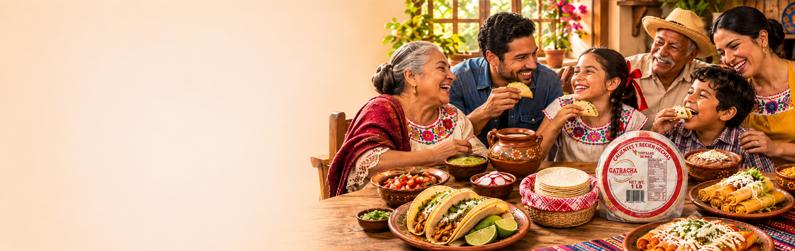
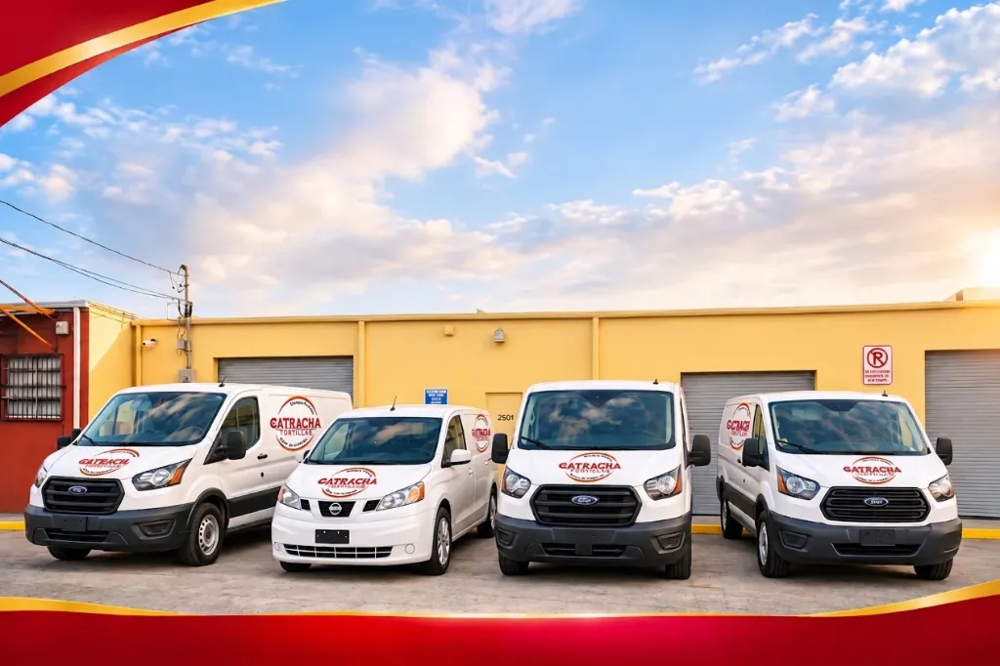
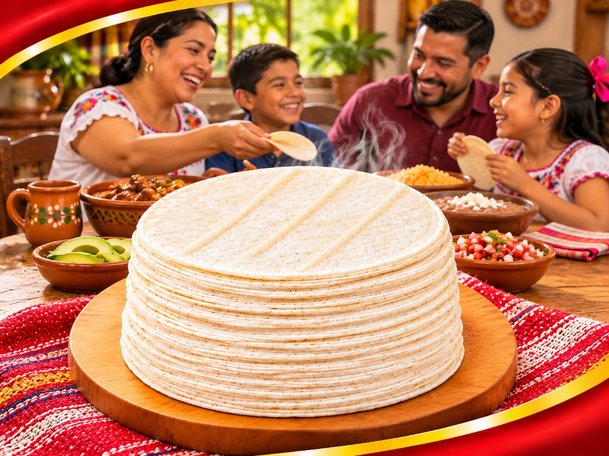
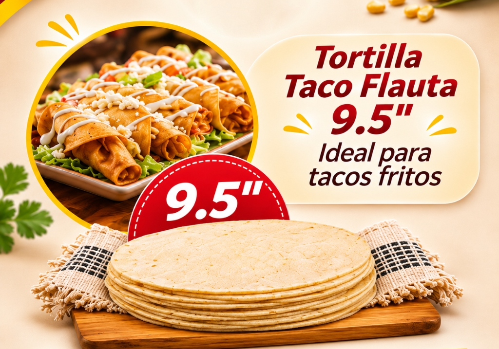

2501 NW 27TH AVE. MIAMI, FL. 33142
lacatrachatortillas@gmail.com
Elaboradas con maíz 100% seleccionado y la receta tradicional que lleva el calor y orgullo de nuestra tierra directamente a tu mesa.

Nuestra tecnología de empaque térmico conserva la temperatura y la textura suave recién salida del comal para compartir en familia.

El acompañamiento imprescindible para tus baleadas, carnes asadas y platillos típicos con el auténtico sazón de nuestra tierra.

Diseñadas para restaurantes, supermercados y hogares que exigen frescura insuperable, resistencia y flexibilidad perfecta.
Tortillas La Catracha ofrece a su cadena de supermercados un producto de alta rotación que une el auténtico sabor artesanal de nuestras recetas familiares con la capacidad de producción diaria de una planta moderna en Miami, Florida. Seleccionamos rigurosamente el mejor maíz y operamos con líneas de acero inoxidable bajo los más estrictos estándares de higiene, sanitización y cumplimiento regulatorio, garantizando un suministro confiable, inocuo y constante. Al incorporar nuestras tortillas en sus góndolas, usted asegura a sus clientes un producto siempre fresco, suave y de calidad superior que impulsa la recompra y fortalece la rentabilidad de su departamento de alimentos.

Tortillas La Catracha ofrece a su supermercado un producto de alta rotación que integra el auténtico sabor de nuestras recetas familiares con una operación integral de producción y distribución diaria en toda el área de Miami, Florida. Elaboramos nuestras tortillas en líneas de acero inoxidable con maíz cuidadosamente seleccionado y bajo los más estrictos estándares estatales de higiene y seguridad alimentaria, y las trasladamos directamente en nuestra propia flotilla acondicionada hasta sus termos exhibidores. Esta cadena de suministro sin intermediarios garantiza a su tienda un abastecimiento puntual, cero quiebres de inventario y un producto siempre fresco, suave y caliente que impulsa la recompra diaria y maximiza la rentabilidad de su departamento de alimentos.

Flotilla Propia en MiamiRepartidores dedicados que cubren rutas diarias programadas en toda el área de Miami, Florida.
Unidades de transporte adaptadas bajo estrictas normas de manipulación de alimentos en Florida.
Llegada puntual para surtir los termos exhibidores y garantizar tortillas siempre frescas y calientes.
El toque catracho que acompaña tus comidas favoritas y convierte cualquier momento en algo especial.

Elaboradas con cuidado para que lleguen suaves, calientitas y listas para compartir.

Una receta con raíces hondureñas, hecha para acompañar los sabores que más querés.

El complemento de todos los días, hecho para estar presente en cada mesa.
Elaboradas diariamente con recetas originales y entregadas frescas y calientes en termos térmicos. Especialistas en tres medidas exclusivas:

Caliente, lista para servir a la mesa
La tortilla clásica e indispensable en la mesa diaria. Elaborada diariamente con puro maíz seleccionado y conservada en termos térmicos para garantizar máxima frescura y temperatura ideal al momento de servir.

Para preparar deliciosos tacos suaves
Diseñada con el tamaño y grosor perfecto para taquerías, camiones de comida y amantes de los tacos. Su masa elástica resiste salsas, limón y carnes jugosas sin partirse ni romperse.

Ideal para tacos fritos
Formato extra grande y maleable para enrollar con facilidad tacos dorados y flautas crujientes. Al freírse logra un color dorado impecable y un crujido irresistible sin absorber grasa de más.
Garantizamos que cada paquete de tortillas conserve su temperatura, aroma y suavidad insuperable hasta el momento de compra en el supermercado.

Inspiración catracha para disfrutar tus tortillas La Catracha en cada ocasión.


2501 NW 27TH AVE. MIAMI, FL. 33142
.png)